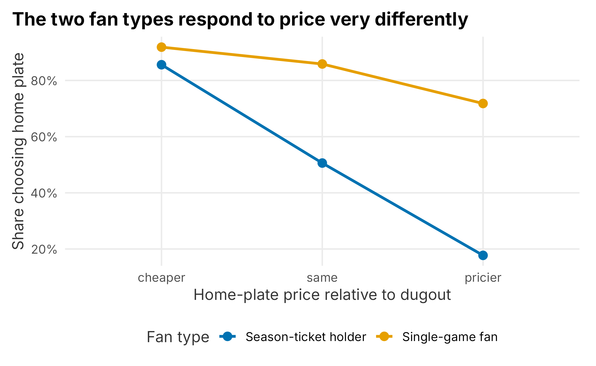
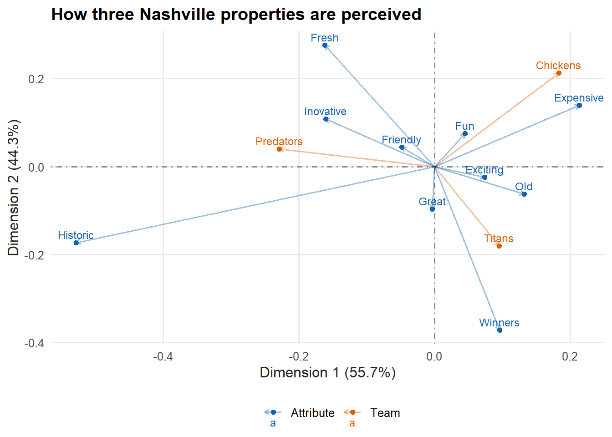

9 Research methods
Consumer research takes many forms. This chapter looks at a few of them in the context of a professional sports team. It would be an easy chapter to skip — most people dislike surveys, dislike designing them even more, and find analyzing them tedious. Research is genuinely hard, and unless you have studied it formally you have probably had little practice. The results are also often read only in passing, since the person who understands them best is usually the one who designed and analyzed them.
Proper research is a huge topic — easily several books — and it overlaps heavily with the pricing and segmentation chapters. Buy a few used references; the material is old, stable, and well understood. This chapter covers two things:
- The basics of experiment design and hypothesis testing
- Planning and designing surveys
A few honest takeaways to keep in mind, even if they read a little cynically:
- You cannot always trust research.
- Different techniques lead to more or less practical outcomes.
- Sampling is difficult and easy to do badly.
- Analyzing results takes care.
- Conflicting findings can stall application.
- It is not always worth conducting.
A recurring difficulty in sports is that stated and observed behavior diverge. Season-ticket holders may react badly to a survey hinting at price increases and then renew at high rates anyway. People also try to game surveys, hoping their answers tilt a decision in their favor. And research is often combined with purchased third-party data, which has its own accuracy problems — a Deloitte study found serious inaccuracies in data from a well-known broker (John Lucker and Bischof 2017):
“Our survey findings suggest that the data that brokers sell not only has serious accuracy problems, but may be less current or complete than data buyers expect or need.”
Garbage in, garbage out. Whenever practical, trust but verify. Despite all this, research should be a foundation of business strategy — the bigger the decision, the more it matters. Framing a question so research can actually answer it is an overlooked skill that takes experience.
Most of your work will be simple satisfaction surveys sent by email after games. Survey work follows a recognizable process; we loosely borrow the steps from Designing Surveys (Johnny Blair 2014):
- Planning and survey design
- Questionnaire design and pretesting
- Final design and planning
- Sample selection and data collection
- Data coding, analysis, and reporting
9.1 Designing experiments and hypothesis testing
Experiment design is a deep field, and nothing brings on impostor syndrome faster than clinical-grade design. The mechanics of building a specific design are fairly recipe-like; making sure the assumptions behind your analysis hold is the hard part. The good news: you are not testing a vaccine. Most experiments on the business side of a club need far less rigor, and you may not formalize the design at all. But you should understand it well enough to be safe — the way knowing that the area under a curve is an integral keeps you out of trouble even if you rarely compute one by hand.
Design is really about validity — whether your results mean anything in the real world. Statistical conclusion validity asks whether the numbers meet the criteria of your test; construct validity asks whether you drew the right conclusion from them. Most of what we have done so far concerns the first. Keep the second in mind always.
The vocabulary centers on a treatment and a control group — the basic structure of an A/B test. One group gets a stimulus (say, a particular ad), the other does not, and you test whether the stimulus changed an outcome such as a purchase. Designs range from a simple A/B test to something very complex, but the aim is the same: decide, with some assurance, whether two or more populations really differ — and then interpret it correctly.
9.1.1 Hypothesis testing
Hypothesis testing confuses people mostly because of how it is phrased. Suppose I want to know whether season-ticket holders spend more on concessions than single-game fans. My null hypothesis is that the difference in mean spend is zero. Rejecting the null implies the means differ.
We start by sampling from both groups. Let’s simulate the populations and draw a sample from each.
set.seed(715)
spend <- dplyr::bind_rows(
tibble::tibble(type = "Season-ticket holder", spend = rnorm(1000, 25, 7)),
tibble::tibble(type = "Single-game fan", spend = rnorm(1000, 18, 7))
)
set.seed(354)
sth_sample <- spend |> filter(type == "Season-ticket holder") |> slice_sample(n = 400)
fan_sample <- spend |> filter(type == "Single-game fan") |> slice_sample(n = 400)| type | spend |
|---|---|
| Season-ticket holder | 16.35 |
| Season-ticket holder | 23.84 |
| Season-ticket holder | 16.24 |
| Season-ticket holder | 32.08 |
| Season-ticket holder | 36.39 |
| Season-ticket holder | 39.42 |
A hypothesis test has two ways to be right and two ways to be wrong. The grid is worth memorizing:
| Null is true | Null is false | |
|---|---|---|
| Reject null | Type I error (false positive) | Correct (detected a real difference) |
| Fail to reject | Correct (no difference) | Type II error (missed a real difference) |
A Type I error means crying wolf — declaring a difference that is not there. A Type II error means missing a difference that is. We test the difference in means with a Student’s t-test.
t_test <- t.test(sth_sample$spend, fan_sample$spend)| estimate1 | estimate2 | statistic | p.value | conf.low | conf.high |
|---|---|---|---|---|---|
| 25.024 | 18.463 | 13.247 | 0 | 5.588 | 7.533 |
The p-value is tiny, so we reject the null: the two groups spend differently. Before trusting any t-test, check its assumptions — roughly equal variances, independent observations, and so on — and use the appropriate variant when they do not hold.
9.1.2 Sampling
The validity of an experiment leans heavily on how you sample. The questions are mostly about bias:
- Is the sample representative of the population I care about?
- Is it large enough to generalize?
- Does it need to be random?
How many people should we have sampled? A power analysis answers that. Using the pwr package (Champely 2020), with an example adapted from Kabacoff (Kabacoff 2011), we ask how big a sample we need to detect a $3 difference in spend.
library(pwr)
effect_size <- 3 / sd(sth_sample$spend)
power_test <- pwr.t.test(
d = effect_size,
sig.level = 0.05,
power = 0.90,
type = "two.sample"
)| effect_size | per_group_n | power | sig_level |
|---|---|---|---|
| 0.408 | 128 | 0.9 | 0.05 |
We need about 128 people per group to detect an effect size of roughly 0.41 with 90% power and a 5% false-positive rate. This is a simplistic example — normality, independence, and correlation between samples all matter — but the point stands: a good sample takes some rigor.
9.1.3 Factorial designs
A common design is the factorial, where you test every combination of the factors. Full factorials get expensive fast, so a fractional factorial tests a chosen subset. You would rarely build one of these in sports outside a conjoint or other formal study, but it is worth seeing.
Suppose we want to understand how fans value two sections — dugout and home plate — at three price points each. The AlgDesign package (Wheeler 2019) builds the design.
## Warning: package 'AlgDesign' was built under R version 4.5.2
design <- gen.factorial(
levels = 3,
nVars = 2,
center = TRUE,
varNames = c("dugout", "homePlate")
)| dugout | homePlate |
|---|---|
| -1 | -1 |
| 0 | -1 |
| 1 | -1 |
| -1 | 0 |
| 0 | 0 |
| 1 | 0 |
| -1 | 1 |
| 0 | 1 |
| 1 | 1 |
The nine rows are every combination of the coded levels (-1, 0, 1), which we map to prices of $75, $85, and $95. Each respondent sees a picture of both views at the shown prices and chooses one:
Which seat would you prefer at these prices?
To analyze it, we need responses. We simulate two kinds of fan whose preferences genuinely differ: season-ticket holders treat the views as interchangeable and choose on price, while single-game fans prefer home plate and will pay a premium for it. We let the chance of choosing home plate depend on whether home plate is cheaper, the same, or pricier than the dugout seat.
price_map <- c(`-1` = 75, `0` = 85, `1` = 95)
combos <- tibble::tibble(
dugout = price_map[as.character(design$dugout)],
homePlate = price_map[as.character(design$homePlate)]
) |>
mutate(hp_position = factor(sign(homePlate - dugout),
levels = c(-1, 0, 1),
labels = c("cheaper", "same", "pricier")))
respondent_types <- tibble::tibble(
respondent = c("Season-ticket holder", "Single-game fan"),
p_cheaper = c(0.85, 0.92),
p_same = c(0.50, 0.85),
p_pricier = c(0.18, 0.72)
)
set.seed(755)
responses <- tidyr::crossing(combos, respondent_types, draw = 1:500) |>
mutate(
p_homeplate = dplyr::case_when(
hp_position == "cheaper" ~ p_cheaper,
hp_position == "same" ~ p_same,
TRUE ~ p_pricier
),
chose_homeplate = rbinom(n(), 1, p_homeplate)
)An interaction plot shows how the two groups respond differently as the home-plate price moves.
interaction_data <- responses |>
group_by(respondent, hp_position) |>
summarise(share_homeplate = mean(chose_homeplate), .groups = "drop")
ggplot(interaction_data, aes(x = hp_position, y = share_homeplate,
color = respondent, group = respondent)) +
geom_point(size = 3) +
geom_line(linewidth = 1.1) +
scale_y_continuous(labels = scales::percent) +
scale_color_manual("Fan type", values = plot_palette) +
labs(x = "Home-plate price relative to dugout", y = "Share choosing home plate",
title = "The two fan types respond to price very differently") +
book_theme
Figure 9.1: Interaction between fan type and relative price
The lines are not parallel, which is the signature of an interaction. Season-ticket holders swing sharply — they pick home plate when it is cheaper and abandon it when it is pricier — while single-game fans stay loyal to the view almost regardless of price. The effect of seat location depends on who the fan is. These designs can grow far more complex, but this is the basic idea.
9.2 Planning and designing a survey
Since we covered segmentation in Chapter 5, we will frame this example around gathering data to build psychographic segments. A realistic brief:
The marketing department of the Nashville Game Hens wants a more sophisticated understanding of its fan base. Specifically: (1) understand the market structure — who attends games, and how does that compare to the region’s population? — and (2) understand how the brand is perceived and what that perception means.
These are broad, and they do not really ask answerable questions yet — part of your job is to translate them. Question one needs us to group fans into a manageable number of segments that are internally similar and to compare them with a regional or national baseline. (With 100,000 fans you technically have 100,000 segments; forcing them into a few understandable boxes is the hard part.) Question two is about brand perception relative to a competitive set — not a routine satisfaction survey.
A constant tension runs through this kind of project: discoverability versus accuracy versus utility. Will the results target individuals, or be cast onto broad groups? How accurate will they be, and if not very, is the expensive project still worth it? Set expectations clearly up front.
9.2.1 Understanding a club’s fans
Sports brands are unusual — people wear a team’s hat around town, but not their shampoo’s. Fandom spans a wide range of people and has strong cyclical components. A few endemic complications:
- A few small ticket classes (corporate accounts, premium seats) drive outsized revenue.
- Responses shift across the season.
- Fans consume through many channels, on many levels.
Is a corporate buyer the same as a fan who buys to watch the game? What does “enjoying the game” even mean when people consume through broadcasts, highlights, merchandise, and social feeds the club does not control? For this project we focus on ticket buyers, which is itself an assumption worth stating.
Even sizing the market requires assumptions. Public attendance figures count tickets, not people. To get from one to the other you might assume an average season-ticket-equivalent count, tickets per account, games and tickets per single-game buyer, and a share from large groups. Different assumptions fork the project in different directions, so make them explicit.
Some of the data for question one may already exist or be cheap to get: census data, observational research (walking the concourse and recording what you see — increasingly automatable with computer vision), emailed surveys, and third-party data. Question two leans on emailed surveys and third-party data. At a minimum you will want basic demographics — age, children, marital status, gender, ethnicity — each of which can inform channel and message decisions, and can be used longitudinally. Spend time on the question before the questionnaire; it is the cheapest place to catch problems.
9.2.2 Selecting a research method
Different needs call for different methods. Common club questions include the competitive set, what fans like, their financial constraints, sponsor awareness, price perception, brand position, and appetite for a loyalty program. Some require specialized survey types that must be designed and interpreted carefully:
- Conjoint experiments
- Van Westendorp
- MaxDiff
- Predictive market studies
Each has strengths and weaknesses. A Van Westendorp study shows how a price is perceived but not willingness to pay (Chapter 6); a conjoint gets closer to willingness to pay. Longitudinal studies track how perception changes over time. As elsewhere in the book, the usual goal is a credible causal link between an activity and an outcome.
9.2.3 Designing the questionnaire
Durable surveys are hard to build; for depth see Designing Surveys (Johnny Blair 2014) and, for analysis, Applied Survey Data Analysis (Steven G. Heeringa 2010). A few principles for simple surveys:
- Have a plan for how you will use and analyze the data.
- Do not ask a question you will not use.
- Do not survey too much or too often.
- Watch the respondent burden — keep it short.
Larger surveys often break into sections: demographics, brand, satisfaction, product. Keep it as short and relevant as you can.
9.2.4 Qualifying the sample
Screening questions make results more relevant and can lower costs when you pay for respondents. You might enforce gender or ethnicity quotas so the sample is not, say, 85% male:
What is your gender? (Male / Female)
What is your ethnicity? (White or Caucasian / Black or African American / South Asian / East Asian / Native American or Pacific Islander / Latino)
Nomenclature shifts over time and is genuinely hard — “Hispanic” and “Latino” are contested, and ethnicity often cross-cuts other categories. Make judgment calls based on the survey’s purpose.
Respondents can also poison a sample. Surveys often screen out industry insiders, who may recognize the mechanics of, say, a conjoint:
Do you or anyone in your household work in marketing research?
In sports it is common to gauge fan avidity, but asking directly in the screen (“Are you a fan of the Game Hens?”) tips your hand — especially through a third party. A subtler version hides the team in a list:
Please rate your interest in each activity: knitting class / attending an MLB game / attending a concert …
That screens out the uninterested without revealing what the survey is about. Finally, embed an attention check to catch indifferent respondents:
Please select the fourth answer below. (Answer 1 / Answer 2 / Answer 3 / Answer 4)
You will be surprised how many fail it; it is usually best to drop those responses.
9.2.5 Typical questions
Some questions appear on almost every survey. How you ask them matters more than it seems. If you can already tie a respondent to their record, you may not need to ask demographics at all — and if you do, consider placing them at the end so you collect the more important answers first, and ask permission before diving in:
Would you like to answer a few demographic questions?
Prefer birth year to age — it is easy to bucket, comparable across years, and supports cleaner scatter plots:
What is your year of birth?
Education is a useful, less-sensitive proxy for wealth than income:
Highest level of education completed? (High school / Some college / College / Graduate degree)
Keep marital status simple unless you have a specific use for the finer categories:
Marital status? (Single / Married / Partnership / Other)
Children matter because youth development is a long-term play, and ages matter — a five-year-old and a sixteen-year-old are very different fans:
Are there children under 18 in your household? (Yes / No) — and if yes, their age ranges.
Multi-select answers are harder to process on the back end, so the more complex the question, the less likely you are to use it. Geography is critical for a club; a zip code is the easiest usable form, though an address (for latitude and longitude) is better:
Please enter your zip code.
Income is touchy and people skip it on non-anonymous surveys. It is ordinal, so keep the buckets in logical order — and remember that survey tools often shuffle answer order to fight response bias, which you must disable for ordinal scales:
Annual household income? (Under $10,000 / $10,000–$49,999 / $50,000–$99,999 / $100,000–$149,999 / $150,000–$199,999 / $200,000–$249,999 / $250,000+)
Be skeptical of catch-all questions like occupation: is “agriculture” a job or an industry, and does an accountant pick “clerical” or “financial”? If you do not have a specific use for it, leave it out.
9.2.5.1 Avidity questions
Avidity is important in sports and widely misunderstood. Of these three, who is the most avid fan?
- Someone who buys $700 season tickets
- Someone who buys $20,000 season tickets
- Someone who buys $1,500 in single-game tickets
These are explicit signals of affinity, but if you just bucket spend you may be measuring wealth, not avidity. Implicit signals (buying merchandise, visiting the site, enrolling a child in a kids’ club) are noisier still — the merchandise might be a gift. You can also ask directly, on a Likert scale:
How big a fan are you? (I live and die for the Game Hens / one of my favorite teams / casual fan / not a fan / I root against them)
Word these carefully; it is easy to write something ambiguous.
9.3 Brand affinity and perceptual maps
Gauging brand perception is hard. A perceptual map visualizes how your brand sits relative to others on the attributes fans associate with each. We use the anacor package (Mair and De Leeuw 2017) on the aggregated perceptual_data from Chapter 2, where respondents checked every attribute that applied to each team:
How do you feel about the following sports properties? Check all that apply for each team.
library(anacor)
perceptions <- as.data.frame(FOSBAAS::perceptual_data)
row.names(perceptions) <- c("Chickens", "Titans", "Predators")
correspondence <- anacor(perceptions, ndim = 2)Correspondence analysis decomposes the table into dimensions, much like principal components. The first two dimensions capture how much of the variation we can show in a flat plot.
## [1] 0.557 0.443We assemble the team scores and the attribute scores into one frame and plot both, so teams sit near the attributes most associated with them.
map_data <- dplyr::bind_rows(
tibble::tibble(
dim1 = correspondence$row.scores[, 1],
dim2 = correspondence$row.scores[, 2],
label = row.names(correspondence$row.scores),
kind = "Team"
),
tibble::tibble(
dim1 = correspondence$col.scores[, 1],
dim2 = correspondence$col.scores[, 2],
label = colnames(perceptions),
kind = "Attribute"
)
)
ggplot(map_data, aes(x = dim1, y = dim2, color = kind)) +
geom_segment(aes(xend = 0, yend = 0), alpha = 0.4,
arrow = arrow(ends = "first", length = unit(0.15, "cm"))) +
geom_text(aes(label = label), size = 3.2, vjust = -0.5) +
geom_point(size = 1.5) +
geom_hline(yintercept = 0, linetype = 4, alpha = 0.4) +
geom_vline(xintercept = 0, linetype = 4, alpha = 0.4) +
scale_color_manual("", values = plot_palette) +
labs(
x = paste0("Dimension 1 (", scales::percent(inertia[1], accuracy = 0.1), ")"),
y = paste0("Dimension 2 (", scales::percent(inertia[2], accuracy = 0.1), ")"),
title = "How three Nashville properties are perceived"
) +
book_theme
Figure 9.2: Perceptual map of Nashville sports properties
Reading the map, the Chickens sit near Fun and Expensive, distinct from the more Historic positioning of the others. Whether that is the position you want is a strategic question — being seen as fun and innovative might attract certain sponsors — but the value of the map is that you can track these perceptions over time and see whether your initiatives move them.
9.4 Other topics
There is far more here than one chapter can hold. We skipped, among others: social listening, brand-personality studies, acquisition models, product recommendation, product positioning, intercept surveys, in-depth interviews, focus groups, competitive intelligence, and respondent incentivization.
Two deserve a quick word. Social listening has become commoditized, with dozens of platforms available. Monitoring and responding to social content matters, but I find sentiment analysis of limited practical value, and word clouds rarely tell you anything surprising. Where social listening earns its keep is media equivalency — helping your sponsorship team value the content placed through social channels, using the same volume-quality-value logic as any other media valuation.
Focus groups have a real role in sports public relations, particularly fan councils for season-ticket holders. They need a firm hand, though, or they degrade into complaint sessions.
For the rest, references and agencies abound. Sports teams are prestigious marketing platforms, so partners are easy to find — the trick is knowing what quality research looks like and finding a partner who knows too. That is harder than it sounds.
9.5 Key concepts and chapter summary
Research should underpin strategic decisions — pricing, operations, sponsorship pitches. We followed the survey process and touched its core ideas:
- Planning and survey design
- Questionnaire design and pretesting
- Final design and planning
- Sample selection and data collection
- Data coding, analysis, and reporting
A few lessons stand out:
- Experiment design is about validity — both that the statistics are sound and that you drew the right conclusion. Treatment-and-control (A/B) is the basic structure.
- Hypothesis testing has two ways to be wrong. A Type I error declares a difference that is not there; a Type II error misses one that is.
- Sampling determines whether any of it can be trusted. A power analysis tells you how large a sample you need before you collect a single response.
- Factorial designs reveal interactions — effects that depend on who the respondent is, like single-game fans paying a premium for a view that season-ticket holders treat as interchangeable.
- Perceptual maps turn brand-attribute data into a picture you can track over time.
And the honest caveats remain: you cannot always trust research, sampling is hard, analysis takes care, and it is not always worth conducting. Used well, though, it is the only informed way to confront questions the data you already own cannot answer. Chapter 10 turns to operations, where we simulate the systems — gates, concession lines, parking — that shape the fan experience on game day.